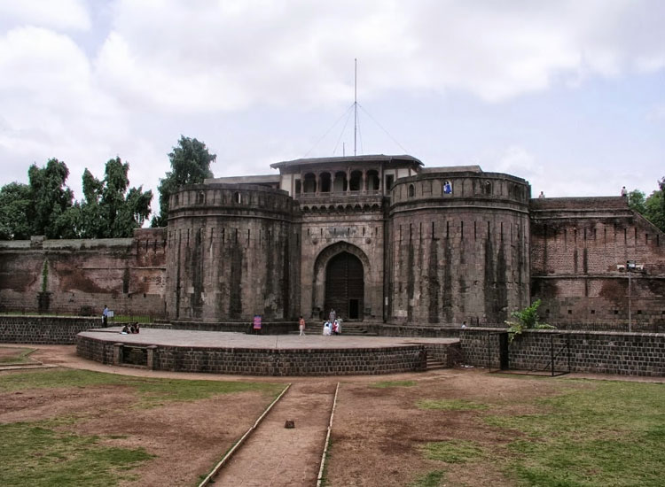
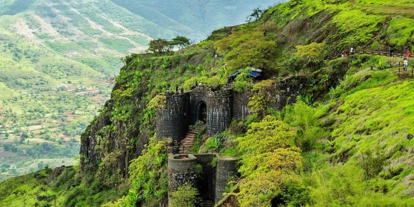
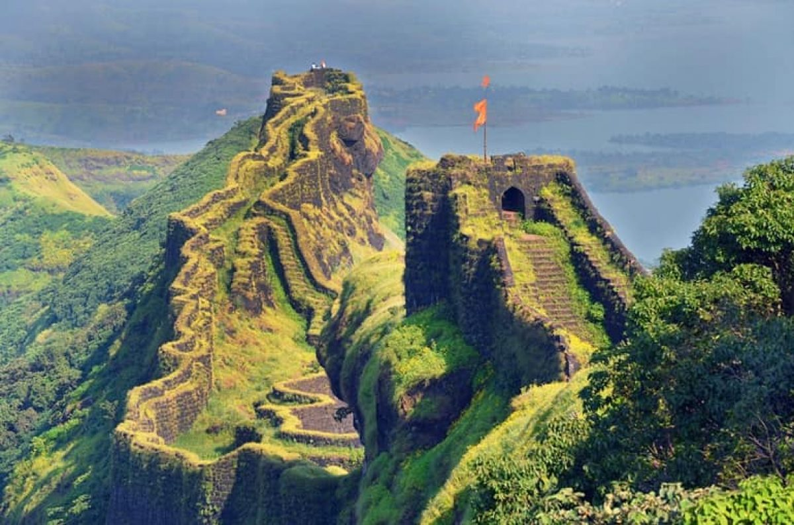
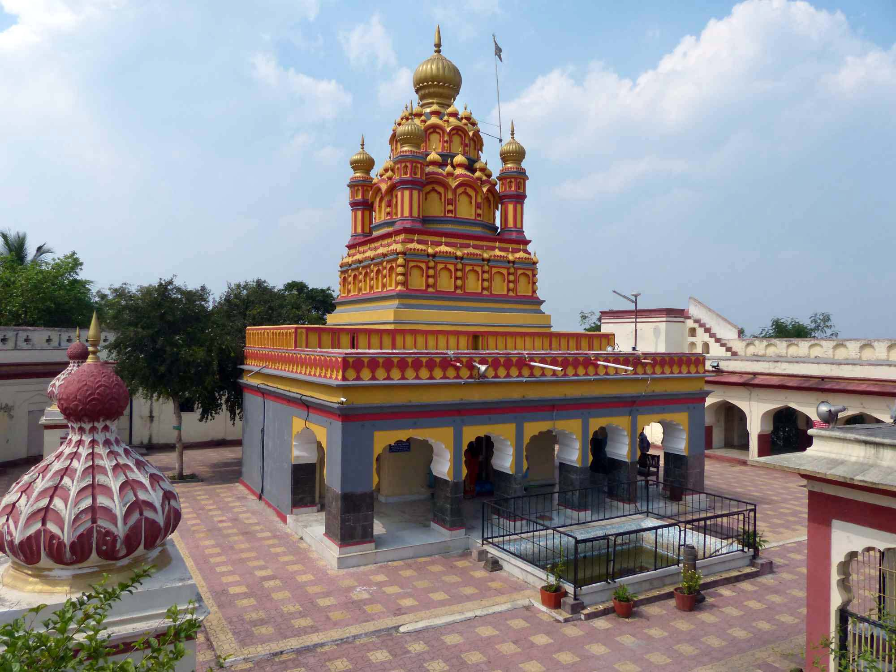
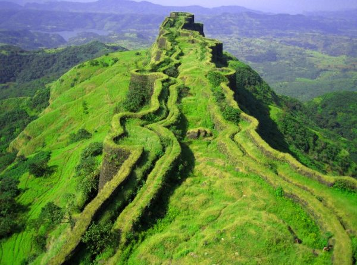
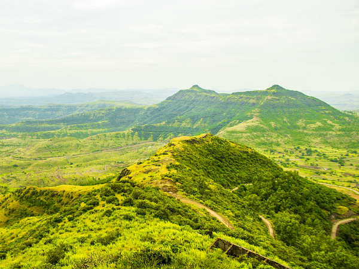
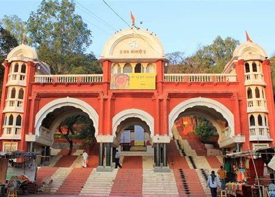

* {
    padding: 0;
    margin: 0;
    box-sizing: border-box;
}

.container {
    width: 100%;
    position: absolute;
    transform: translate(-50%, -50%);
    left: 50%;
    box-shadow: 25px 30px 40px rgba(0, 0, 0, 0.666);
    top: 500px;
    height: 300px;
}

.wrapper {
    width: 100%;
    display: flex;
    animation: slide 30s infinite;
    height: 300px;
    
}

.wrapper img {
    width: 100%;
    border: 1px solid black;
    opacity: 0.8;
    
}

@keyframes slide {
    0% {
        transform: translateX(0);
    }

    20% {
        transform: translateX(0);
    }

    25% {
        transform: translateX(-100%);
    }

    45% {
        transform: translateX(-100%);
    }

    50% {
        transform: translateX(-200%);
    }

    70% {
        transform: translateX(-200%);
    }

    75% {
        transform: translateX(-284%);
    }

    95% {
        transform: translateX(-284%);
    }

    100% {
        transform: translateX(0);
    }
}


<div class="container">
    <div class="wrapper">
        
        
        
        
        
        
        
        
        
        
        
        
        
        
    </div>
</div>